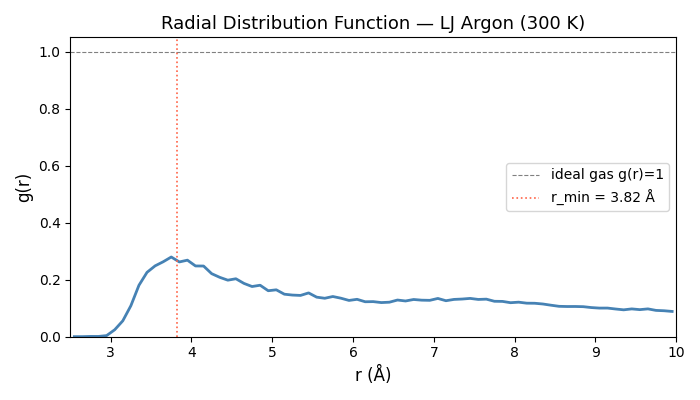

Note
Go to the end to download the full example code.
Writing a Custom Hook: Radial Distribution Function#
The Hook protocol is nvalchemi-toolkit’s
primary extension point. Any object that has stage, frequency, and
__call__(batch, dynamics) satisfies the protocol — no base class is
required. This duck-typing approach makes hooks easy to write and easy to
test in isolation.
This example builds a full radial distribution function (RDF) accumulator as a custom hook. The RDF is the cornerstone structural observable in liquid simulations. For a homogeneous isotropic fluid it is defined as:
where V is the system volume, N the atom count, and the angle brackets denote a time average. A peak at ~3.8 Å in LJ argon corresponds to the nearest-neighbour shell.
Key concepts demonstrated#
The minimal hook interface:
stage,frequency,__call__.Accumulating statistics across steps with instance attributes.
Normalising the RDF and writing it to a text file.
Using
ON_CONVERGEto flush accumulated data when the run finishes.
from __future__ import annotations
import logging
import math
import os
import torch
from nvalchemi.data import AtomicData, Batch
from nvalchemi.dynamics import NVTLangevin
from nvalchemi.dynamics.base import HookStageEnum
from nvalchemi.dynamics.hooks import NeighborListHook
from nvalchemi.models.lj import LennardJonesModelWrapper
logging.basicConfig(level=logging.INFO)
The Hook protocol#
A hook is any Python object with three things:
stage : HookStageEnumDeclares when the hook fires. The dynamics engine dispatches hooks keyed by this attribute.
frequency : intFire every N steps.
frequency=1fires every step;frequency=10fires on steps 0, 10, 20, … (step_count % frequency == 0).__call__(batch: Batch, dynamics: BaseDynamics) -> NoneThe hook body. Modify the batch in-place (post-compute hooks) or read it for observation (observer hooks).
No base class is needed. If a hook also implements __enter__ /
__exit__ the dynamics engine calls those around run() automatically,
which is useful for file handles and profilers.
from nvalchemi.dynamics.base import BaseDynamics # noqa: E402 (import after docstring)
class _MinimalHook:
"""A do-nothing hook that illustrates the protocol."""
stage = HookStageEnum.AFTER_STEP
frequency = 1 # fire every step
def __call__(self, batch: Batch, dynamics: BaseDynamics) -> None:
pass # read batch or dynamics attributes here
Implementing RadialDistributionHook#
The RDF accumulator fires at AFTER_STEP with a configurable frequency.
Pair distances are computed with torch.cdist() (O(N²) — fine for
small demo systems of ≤ 50 atoms).
When the run ends the accumulated histogram is normalised by the expected number of pairs in each spherical shell of an ideal gas at the same number density, yielding the dimensionless g(r).
class RadialDistributionHook:
"""Accumulate the radial distribution function during an MD run.
Parameters
----------
r_min : float
Lower edge of the first bin (Å). Pairs closer than this are ignored
(avoids the divergence at r → 0 and the core repulsion region).
r_max : float
Upper edge of the last bin (Å). Should be less than half the
simulation box size for periodic systems.
n_bins : int
Number of histogram bins.
output_path : str
Path to write the normalised g(r) when :meth:`save_rdf` is called.
frequency : int
Accumulate every *frequency* steps.
Attributes
----------
rdf_histogram : torch.Tensor
Accumulated raw pair-count histogram, shape ``(n_bins,)``.
n_samples : int
Number of times the histogram has been updated.
"""
stage = HookStageEnum.AFTER_STEP
def __init__(
self,
r_min: float = 2.0,
r_max: float = 12.0,
n_bins: int = 100,
output_path: str = "rdf.dat",
frequency: int = 5,
) -> None:
self.r_min = r_min
self.r_max = r_max
self.n_bins = n_bins
self.output_path = output_path
self.frequency = frequency
# Pre-compute bin edges and centres on CPU.
self.bin_edges = torch.linspace(r_min, r_max, n_bins + 1) # [n_bins+1]
self.bin_centers = 0.5 * (self.bin_edges[:-1] + self.bin_edges[1:]) # [n_bins]
self.bin_width = (r_max - r_min) / n_bins
# Accumulators.
self.rdf_histogram = torch.zeros(n_bins, dtype=torch.float64)
self.n_samples: int = 0
self._n_atoms: int = 0 # set from first batch
def __call__(self, batch: Batch, dynamics: BaseDynamics) -> None:
"""Accumulate pair distances into the histogram."""
# Process each graph (system) in the batch independently.
ptr = batch.ptr # [B+1] — atom start/end indices per graph
# NOTE: .cpu() forces a GPU→CPU synchronization here. For a
# production RDF hook on large systems, keep the histogram on GPU
# (torch.histc works on CUDA) and only transfer the final g(r) result
# once after the run. The CPU path is used here for clarity.
positions_cpu = batch.positions.detach().cpu()
for g in range(batch.num_graphs):
start = ptr[g].item()
end = ptr[g + 1].item()
pos_g = positions_cpu[start:end] # [n_atoms, 3]
n_atoms = pos_g.shape[0]
if n_atoms < 2:
continue
# Pairwise distance matrix [n_atoms, n_atoms].
dist_mat = torch.cdist(pos_g, pos_g) # [n, n]
# Extract upper triangle (i < j) to avoid double-counting.
i_idx, j_idx = torch.triu_indices(n_atoms, n_atoms, offset=1)
dists = dist_mat[i_idx, j_idx] # [n_pairs]
# Filter to [r_min, r_max).
mask = (dists >= self.r_min) & (dists < self.r_max)
dists_in_range = dists[mask]
if dists_in_range.numel() > 0:
counts = torch.histc(
dists_in_range.float(),
bins=self.n_bins,
min=self.r_min,
max=self.r_max,
)
self.rdf_histogram += counts.double()
self._n_atoms = n_atoms # record for normalisation
self.n_samples += 1
def get_rdf(
self, density: float | None = None
) -> tuple[torch.Tensor, torch.Tensor]:
"""Compute the normalised g(r).
Parameters
----------
density : float | None
Number density ρ = N/V in Å⁻³. If ``None``, the denominator is
the ideal-gas shell count for a box with N atoms in a volume
inferred from N and a nominal density of 0.021 Å⁻³ (liquid Ar).
Pass an explicit value for periodic-box simulations.
Returns
-------
r : torch.Tensor
Bin centres in Å, shape ``(n_bins,)``.
g_r : torch.Tensor
Normalised g(r), shape ``(n_bins,)``.
"""
if self.n_samples == 0:
return self.bin_centers, torch.zeros_like(self.bin_centers)
n = max(self._n_atoms, 1)
if density is None:
density = 0.021 # approximate liquid argon Å⁻³
# Ideal-gas pair count in each shell:
# dn_ideal = ρ * N * 4π r² dr
r = self.bin_centers.double()
dr = float(self.bin_width)
ideal_pairs_per_snapshot = density * n * 4.0 * math.pi * r**2 * dr
# Scale by number of snapshots (frames) accumulated.
total_ideal = ideal_pairs_per_snapshot * self.n_samples
g_r = self.rdf_histogram / total_ideal.clamp(min=1e-12)
return self.bin_centers.float(), g_r.float()
def save_rdf(self, path: str | None = None, density: float | None = None) -> None:
"""Write the normalised g(r) to a two-column text file.
Parameters
----------
path : str | None
Output path; falls back to ``self.output_path``.
density : float | None
Forwarded to :meth:`get_rdf`.
"""
out_path = path if path is not None else self.output_path
r, g_r = self.get_rdf(density=density)
with open(out_path, "w") as fh:
fh.write("# r(Angstrom) g(r)\n")
for ri, gi in zip(r.tolist(), g_r.tolist()):
fh.write(f"{ri:.6f} {gi:.6f}\n")
logging.getLogger(__name__).info(
"RDF written to %s (%d bins, %d samples)",
out_path,
self.n_bins,
self.n_samples,
)
Running with RadialDistributionHook#
Build a small LJ argon cluster and run 300 NVT steps. The RDF hook fires every 5 steps, accumulating 60 snapshots.
LJ_EPSILON = 0.0104
LJ_SIGMA = 3.40
LJ_CUTOFF = 8.5
_R_MIN_LJ = 2 ** (1 / 6) * LJ_SIGMA
model = LennardJonesModelWrapper(
epsilon=LJ_EPSILON,
sigma=LJ_SIGMA,
cutoff=LJ_CUTOFF,
max_neighbors=32,
)
def _make_cluster(n_per_side: int = 2, seed: int = 0) -> AtomicData:
n = n_per_side**3
spacing = _R_MIN_LJ * 1.05
coords = torch.arange(n_per_side, dtype=torch.float32) * spacing
gx, gy, gz = torch.meshgrid(coords, coords, coords, indexing="ij")
positions = torch.stack([gx.flatten(), gy.flatten(), gz.flatten()], dim=-1)
torch.manual_seed(seed)
positions = positions + 0.05 * torch.randn_like(positions)
return AtomicData(
positions=positions,
atomic_numbers=torch.full((n,), 18, dtype=torch.long),
forces=torch.zeros(n, 3),
energies=torch.zeros(1, 1),
velocities=0.1 * torch.randn(n, 3),
)
batch = Batch.from_data_list([_make_cluster(n_per_side=4, seed=13)])
print(f"System: {batch.num_graphs} graph(s), {batch.num_nodes} atoms total")
rdf_hook = RadialDistributionHook(
r_min=2.5,
r_max=10.0,
n_bins=75,
output_path="rdf_argon.dat",
frequency=5,
)
neighbor_hook = NeighborListHook(model.model_card.neighbor_config)
nvt = NVTLangevin(
model=model,
dt=1.0,
temperature=300.0,
friction=0.1,
n_steps=1000,
random_seed=3,
)
nvt.register_hook(neighbor_hook)
nvt.register_hook(rdf_hook)
batch = nvt.run(batch)
print(f"\nRun complete: {nvt.step_count} steps, {rdf_hook.n_samples} RDF snapshots")
rdf_hook.save_rdf()
# Print a brief summary of the RDF.
r_vals, g_vals = rdf_hook.get_rdf()
peak_idx = g_vals.argmax().item()
print(
f"RDF peak at r ≈ {r_vals[peak_idx]:.2f} Å "
f"(expected ~{_R_MIN_LJ:.2f} Å for LJ Ar nearest-neighbour)"
)
System: 1 graph(s), 64 atoms total
Run complete: 1000 steps, 200 RDF snapshots
RDF peak at r ≈ 3.75 Å (expected ~3.82 Å for LJ Ar nearest-neighbour)
Optional RDF plot#
Set NVALCHEMI_PLOT=1 to display the RDF figure.
Sphinx-gallery captures this as the example thumbnail.
if os.getenv("NVALCHEMI_PLOT", "0") == "1":
try:
import matplotlib.pyplot as plt
r_vals, g_vals = rdf_hook.get_rdf()
fig, ax = plt.subplots(figsize=(7, 4))
ax.plot(r_vals.numpy(), g_vals.numpy(), color="steelblue", linewidth=2)
ax.axhline(
1.0, color="gray", linewidth=0.8, linestyle="--", label="ideal gas g(r)=1"
)
ax.axvline(
_R_MIN_LJ,
color="tomato",
linewidth=1.2,
linestyle=":",
label=f"r_min = {_R_MIN_LJ:.2f} Å",
)
ax.set_xlabel("r (Å)", fontsize=12)
ax.set_ylabel("g(r)", fontsize=12)
ax.set_title("Radial Distribution Function — LJ Argon (300 K)", fontsize=13)
ax.legend(fontsize=10)
ax.set_xlim(rdf_hook.r_min, rdf_hook.r_max)
ax.set_ylim(bottom=0)
fig.tight_layout()
plt.show()
except ImportError:
print("matplotlib not available — skipping plot.")

Total running time of the script: (0 minutes 1.348 seconds)